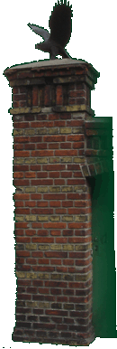

Geschichte

Die Villa Rixdorf steht mitten im historischen Böhmischen Dorf, direkt am
Richardplatz in Berlin-Neukölln. Ihre Geschichte reicht weit zurück – von der
ersten urkundlichen Erwähnung über die böhmischen Glaubensflüchtlinge bis zum
Bau des heutigen Hauses.
Die wichtigsten Stationen im Überblick:
-
1360
Erste urkundliche Erwähnung
Rixdorf, das frühere Richardsdorp, wird urkundlich erstmalig erwähnt.
-
1624
Schmiede am Richardplatz
Die historische Schmiede mitten auf dem Richardplatz wird zum ersten Mal erwähnt – bis heute prägt sie den Marktplatz, an dem die Villa Rixdorf liegt.
-
1737
Das Böhmische Dorf entsteht
Rund 350 protestantische Glaubensflüchtlinge aus Böhmen siedeln auf Einladung König Friedrich Wilhelms I. am Richardplatz. So entsteht Böhmisch-Rixdorf, das „Böhmische Dorf“.
-
28. April 1849
Der große Brand
Es ist von einem schweren Schicksalsschlag zu berichten: …am 28. April 1849,
mittags 12 Uhr, entstand auf dem Gehöft des Bauern Wilhelm Mulack auf ganz
eigentümliche Weise Feuer. Der Arbeitsmann Kuschke hatte nach einem Storch,
welcher auf der Scheune des Mulack’schen Gehöftes sein Nest hatte, geschossen.
Das Geschoss, aus einem mit Werg umwickelten Pfropfen bestehend, fuhr in das
Strohdach und entzündete es. Bald schlugen helle Flammen empor. Der herrschende
Süd-Ostwind führte brennendes Stroh und Rohr von der Scheune fort, wodurch die in
der Nähe gelegenen Gehöfte in Brand gerieten. In wenigen Stunden waren 52
Wohnhäuser, 28 Scheunen und 74 Ställe in Asche gelegt.
-
1853
Wiederaufbau
So groß das Unglück auch war – durch die Hilfsbereitschaft der umliegenden
Dörfer, in denen gesammelt wurde, wurde es schnell überwunden. Am Ende waren
8000 Taler zusammengekommen. Rixdorf entstand neu mit nunmehr massiven Häusern.
-
1870
Die Villa Rixdorf entsteht
Café Restaurant Villa Rixdorf, das Eckgrundstück am Richardplatz 6, wird als respektables Haus eines Landwirtes erbaut.

-
Heute
Bis heute
Mit seinem eisenumzäunten Vorgarten prägt das Haus noch heute den alten Ortskern – mitten im denkmalgeschützten Böhmischen Dorf am Richardplatz.

Wir freuen uns auf Ihren Besuch!